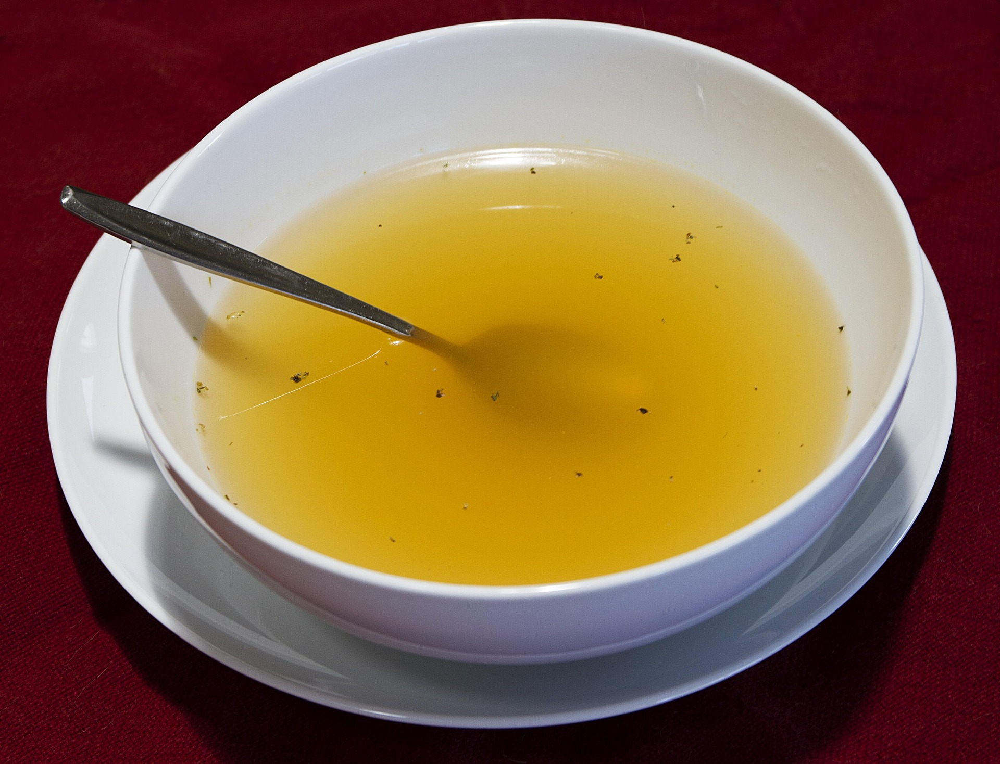

Home
Chicken Stock

Description
This recipe shows you how to create a rich chicken stock. This stock can be used for other recipes. This recipe
is not for beginners as it lacks measurement and timing.This recipe is from chefolaskitchen.com.
Ingredients
- Chicken
- Onions
- Scotch Bonnet
- Ginger
a
- Garlic
- Thyme
- Bay Leave
- Seasoning ( salt, curry, bouillon )
Steps
- Clean chicken thoroughly
- Season with the rest of the ingredients
- Add water
- Cook until tender
- Seprate chicken from stock